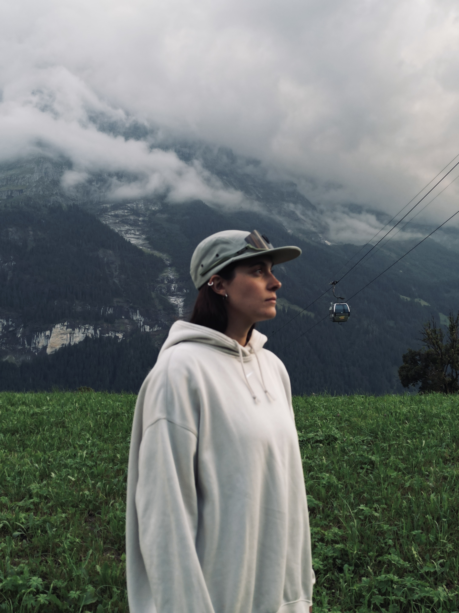
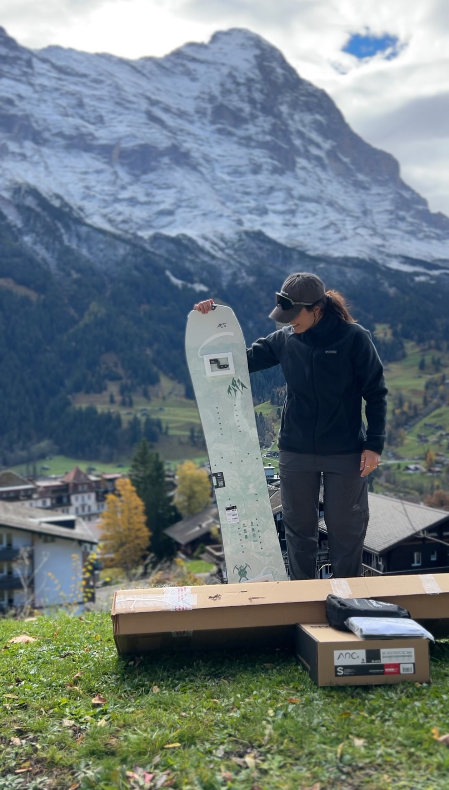
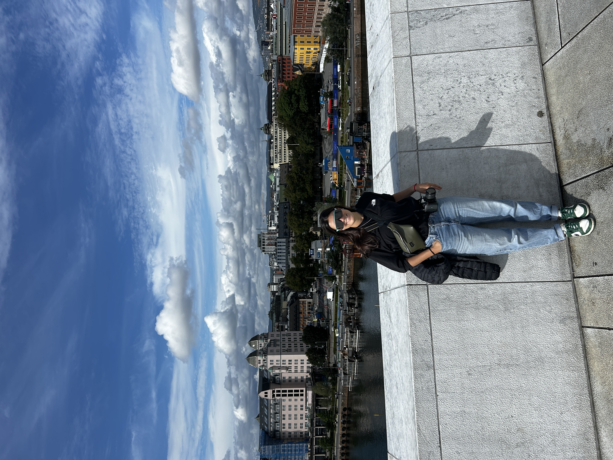
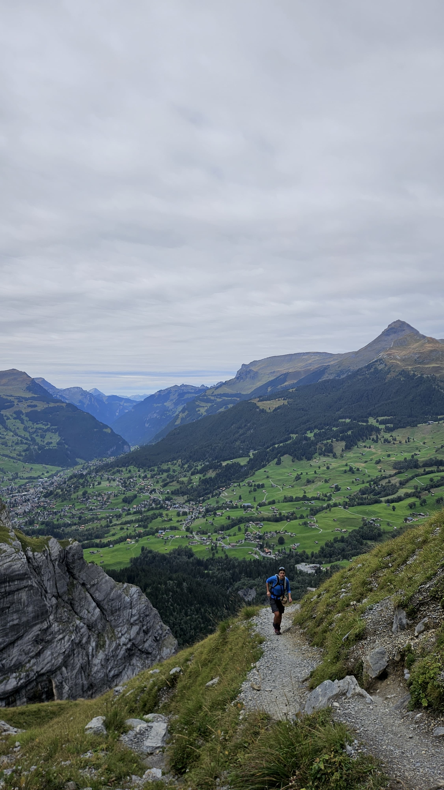

Winter Experiences
Ski and snowboard days focused on confidence, progression and good energy in the mountains.
FROM PATAGONIA TO THE SWISS ALPS
ABOUT MARIANA
I’m Mariana — ski and snowboard instructor, outdoor lover and founder of Proyecto Alpino. Originally from Patagonia and currently based in Switzerland, I create personalized mountain experiences for travelers looking for something more authentic than a typical tour.

EXPERIENCES
Ski and snowboard days focused on confidence, progression and good energy in the mountains.
Hiking routes, mountain biking, alpine lakes and scenic trails adapted to your rhythm.
Mountain villages, local cafés, scenic walks and authentic places most tourists never see.

PROYECTO ALPINO
Proyecto Alpino was born from a simple idea: the best experiences happen when they feel personal. Instead of offering generic tours, we create adventures adapted to each person — combining nature, movement, culture and local knowledge.
EXPLORE THE ALPS



FOLLOW THE JOURNEY
Behind the scenes, mountain days, hidden places and everyday life in the Alps.
@proyectoalpino